-
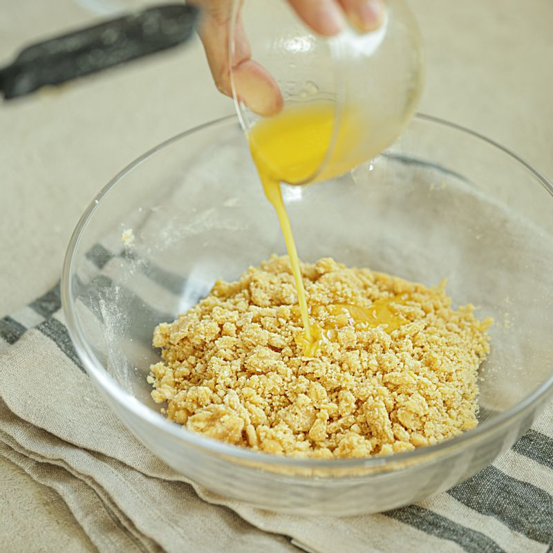
볼에 달걀과 에리스리톨을 넣고 섞다가 바닐라 익스트랙, 아몬드 가루, 베이킹소다, 녹인 버터를 넣고 주걱으로 섞어주세요.
-
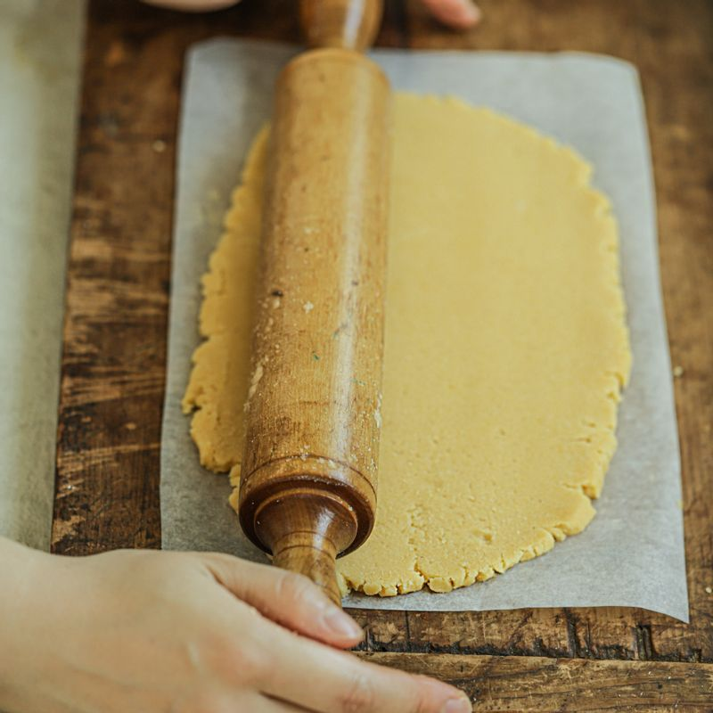
반죽을 밀대로 밀어 오븐 팬 위에 올려주세요.
-
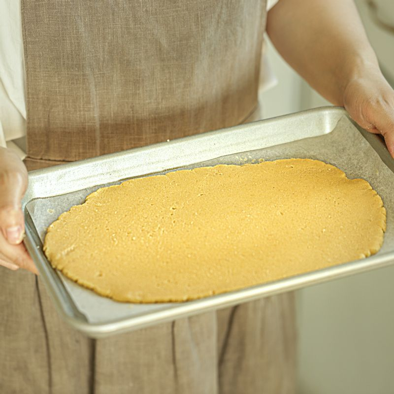
170도로 예열한 오븐에 10~15분 정도 구워낸 후 식혀주세요.
(오븐 성능에 따라 굽는 시간이 다를 수 있어요)
-
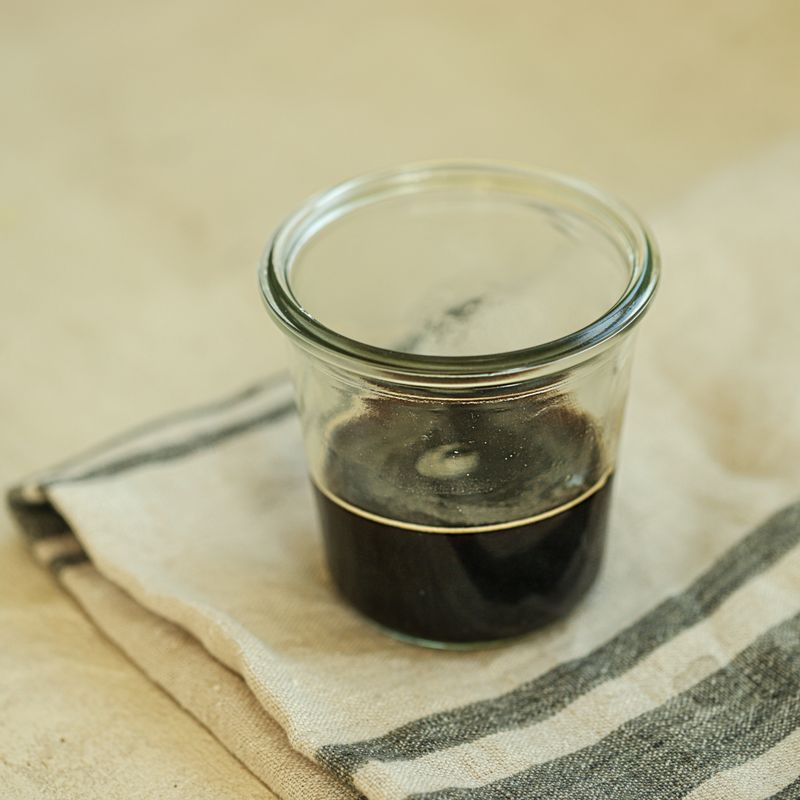
볼에 커피 시럽 재료를 넣어 잘 저어주세요.
-
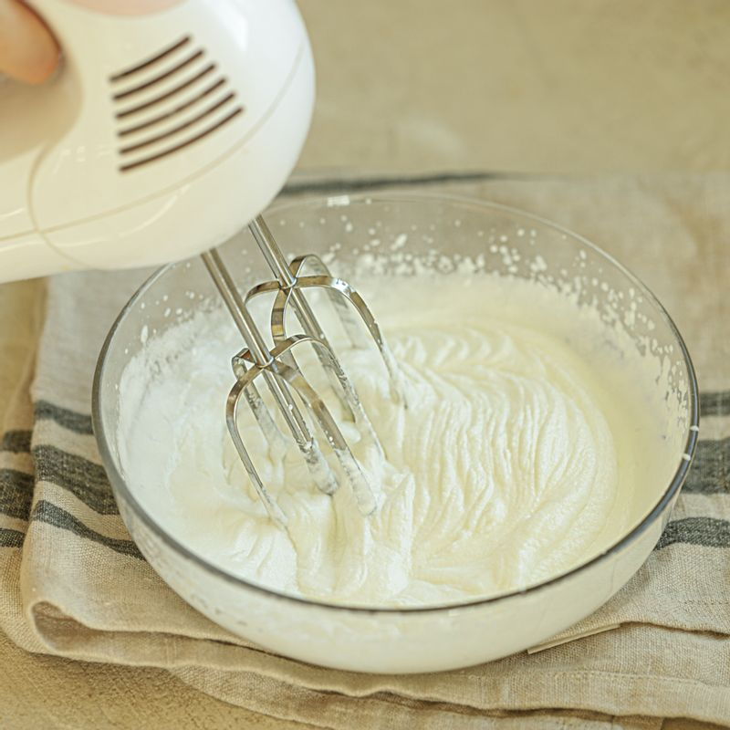
생크림과 에리스리톨을 핸드믹서로 휘핑해 주세요.
(tip. 생크림이 부드러운 물결 모양이 생길 때까지 휘핑해 주세요)
-
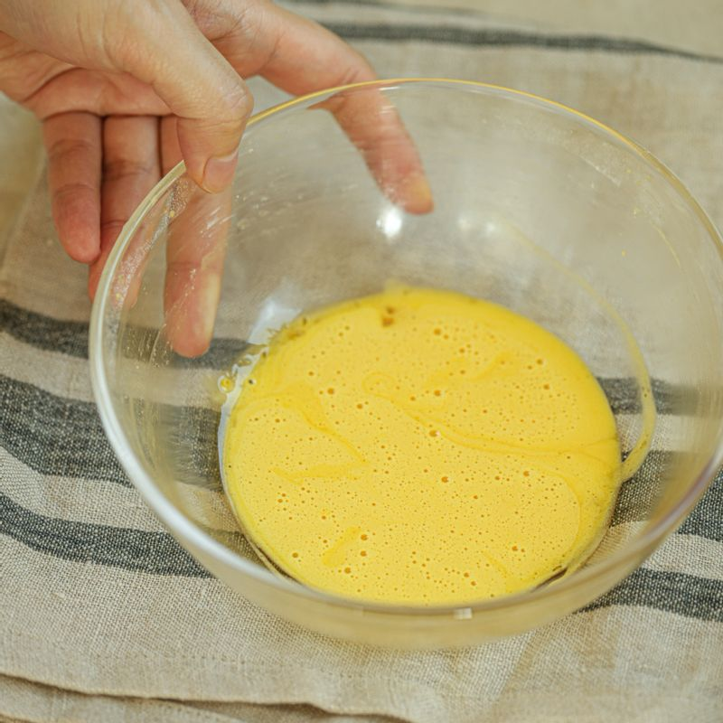
볼에 노른자와 에리스리톨, 바닐라 익스트랙을 넣고 중탕 냄비에 올려 핸드믹서로 휘핑해 주세요.
(tip. 마스카포네는 실온에 두어 부드럽게 한 후 사용해 주세요)
-
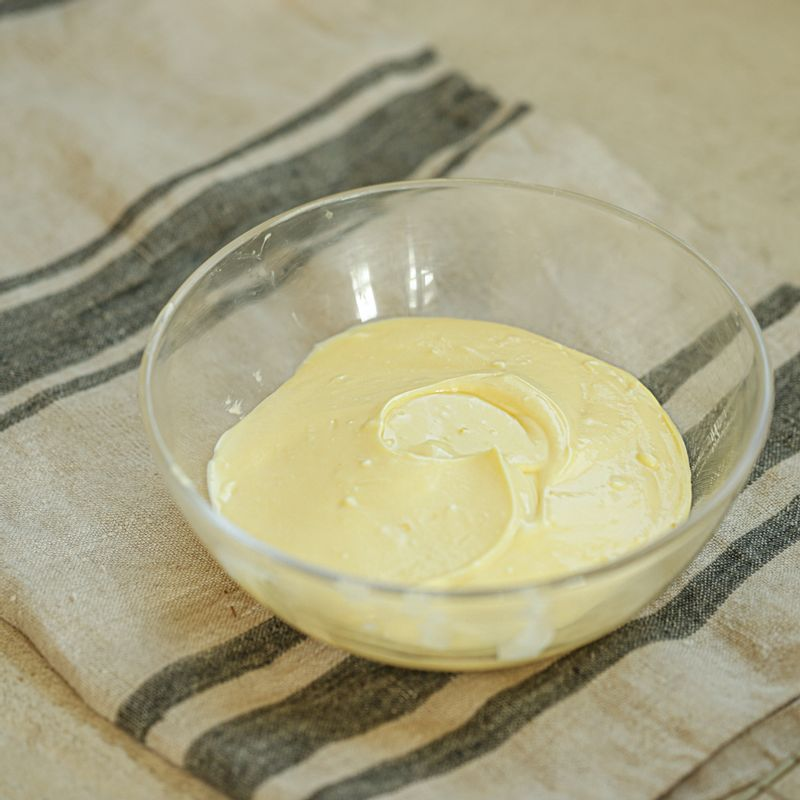
마스카포네를 주걱으로 가볍게 풀어준 후 휘핑한 노른자에 넣고 섞어주세요.
-
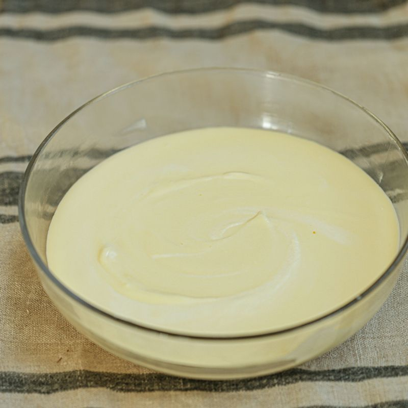
휘핑해둔 생크림과 섞어주세요.
-
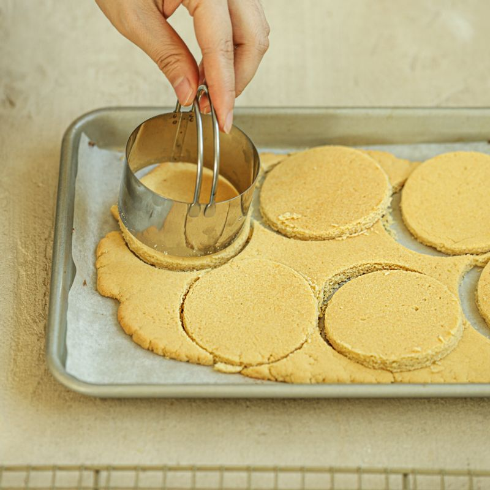
식힌 티라미수 시트를 사용할 용기 크기에 맞게 재단해 주세요.
-
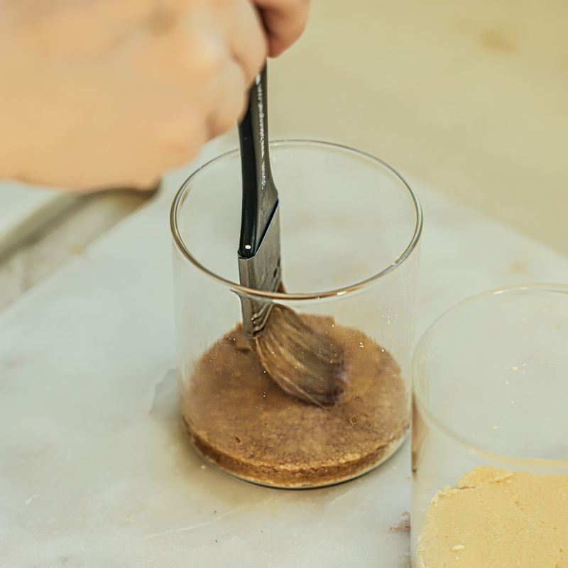
시트를 한 장 깔고 커피를 적신 후 만들어둔 크림을 넣어주세요.
(tip. 제빵용 솔을 이용해 적시거나 빵을 커피에 직접 담가 적셔도 괜찮아요)
-
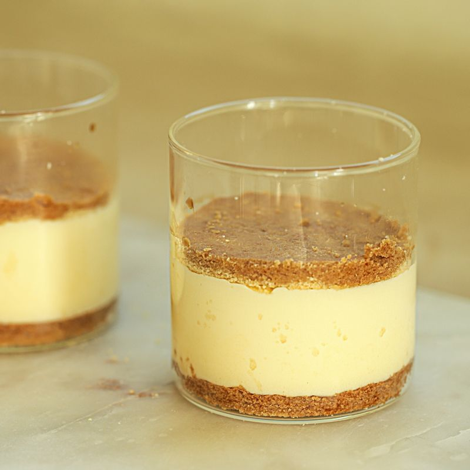
크림 위에 빵을 레이어하고 커피를 적신 후 크림을 넣어주세요. 냉장고에서 1시간 정도 차갑게 굳혀주세요.
-
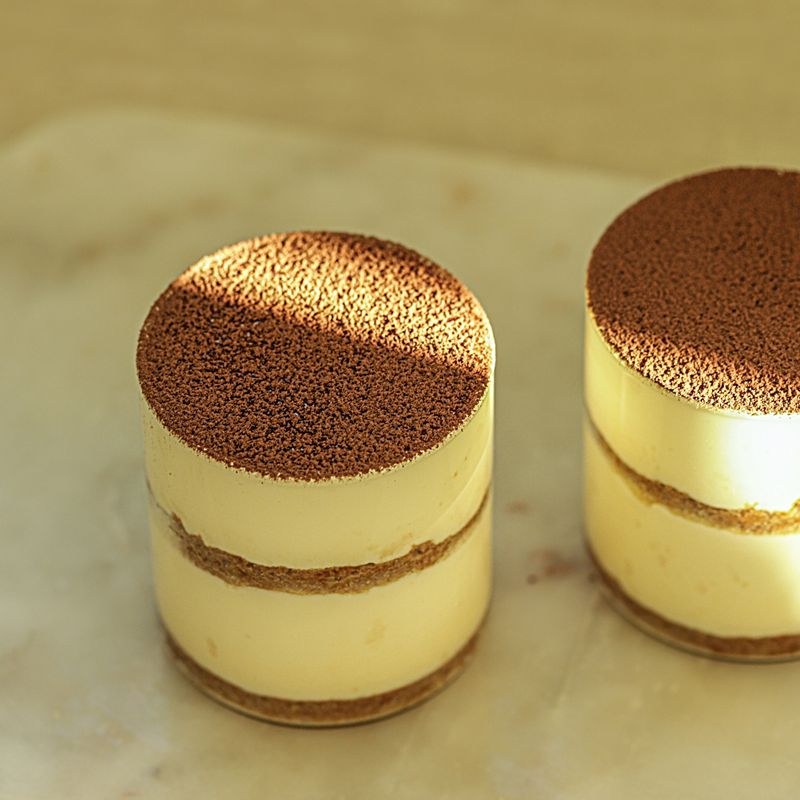
먹기 직전 코코아 파우더를 체에 내려 뿌려주세요.